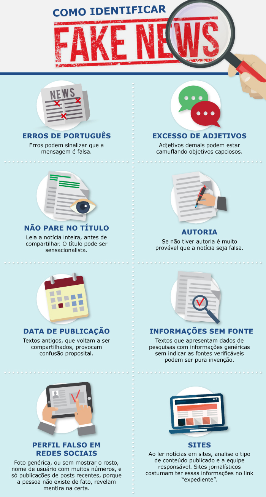

Desinformação
O combate às Fake News é algo difícil. Os mecanismos de produção e veiculação das falsas informações são
muito eficientes e escondem a identidade dos criminosos.
Diariamente, as fake news vem ganhando força, principalmente pela falta de análise de quem recebe e logo em
seguida compartilha, sem considerar nenhum critério de verificação de autenticidade. porém, existem algumas
estratégias para minimizar os riscos de acreditar em informações inverídicas.
- Sempre procurar pela fonte e autoria da notícia: verifique se a informação está atrelada a um site
confiável, se há autoria ou algum dado que confirme a notícia
- Sempre verificar a veracidade dos fatos: é importante investigar se a notícia foi divulgada em outros
portais confiáveis, como jornais ou canais de comunicação oficiais
- Conferir o contexto e a data da notícia: As vezes uma notícia falsa pode trazer alguma fala fora de
contexto
- Seja crítico: informações falsas costumam ter títulos sensacionalistas, erros ortográficos ou URLs
duvidosas, caso se depare com esses indícios, suspeite

Sites de Checagem
Existem alguns sites onde podemos verificar a veracidade de uma notícia: